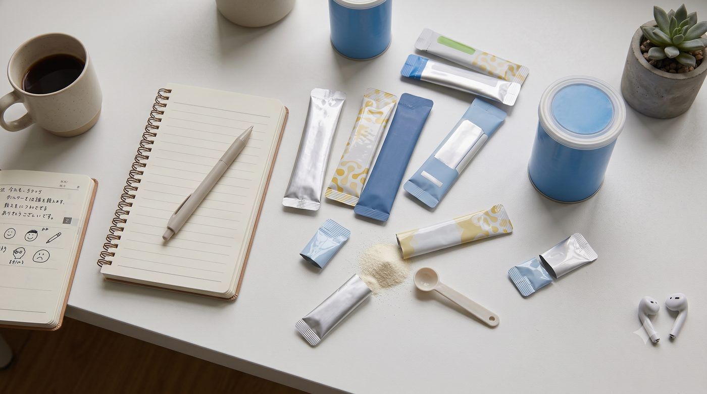
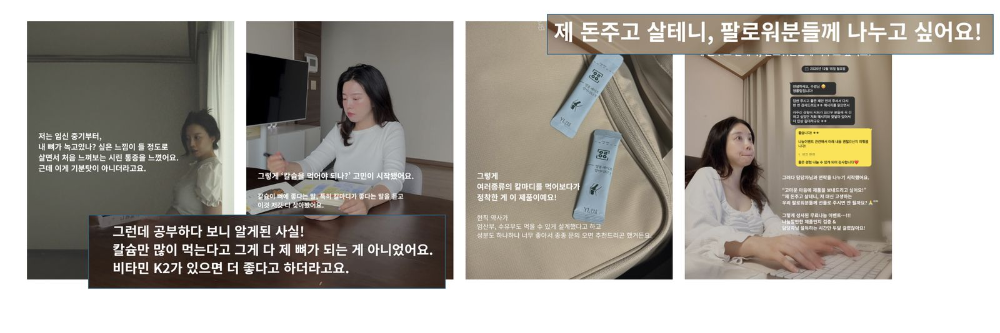
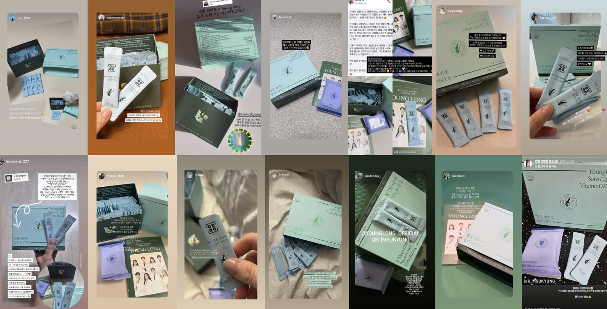
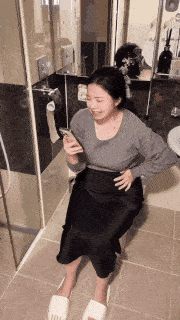
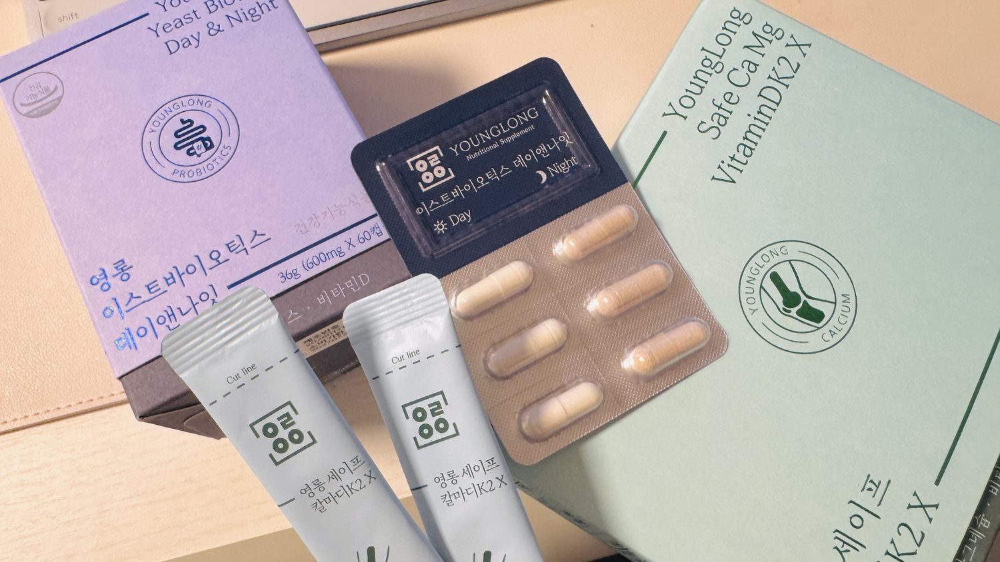
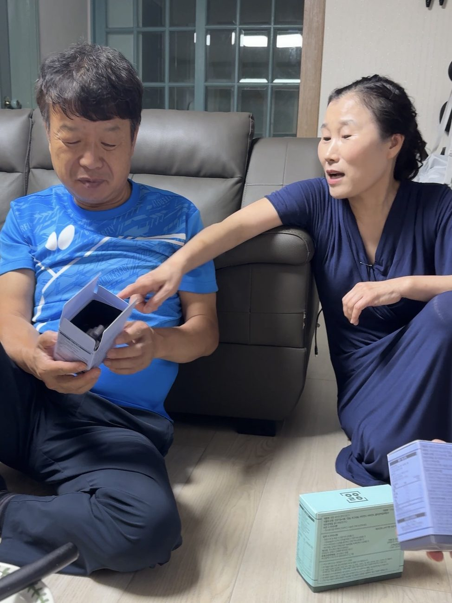
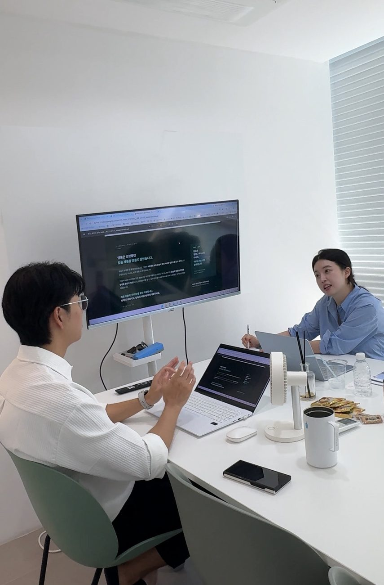
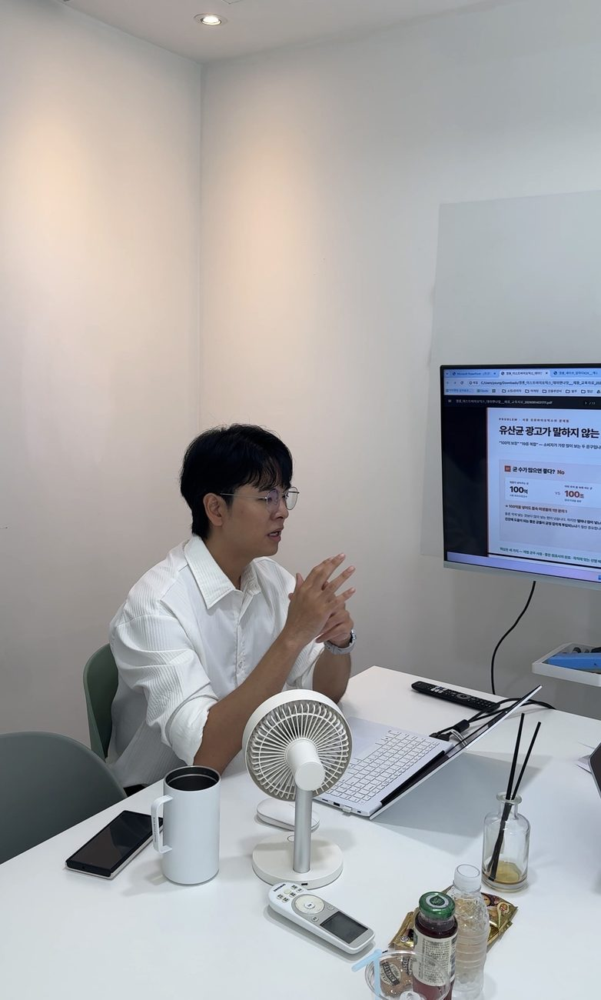
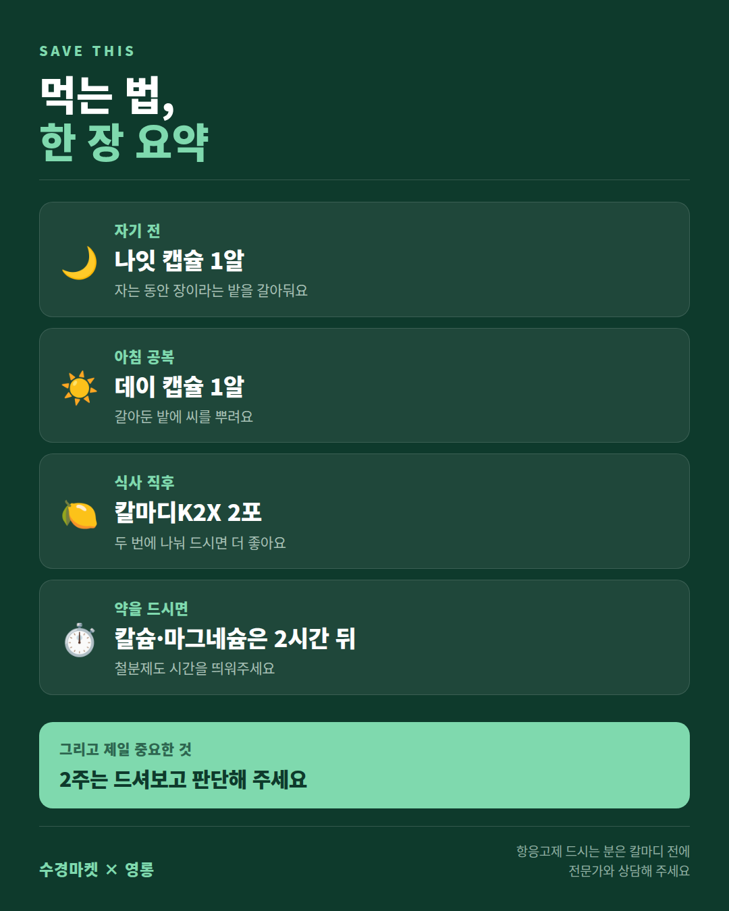

저도 마트에서 파는 거
먹던 사람이었어요
가루로 된 거 있잖아요. 스틱 뜯어서 입에 털어 넣는 거. 매대에 있는 건 웬만하면 다 먹어봤어요.
맛있어요. 새콤달콤하고. 먹기도 편하고요.
근데 계속 뭔가 걸렸어요.
이게… 진짜 효과가 있나?
딱히 뭐가 달라지는 것 같지도 않고. 그렇다고 안 먹자니 찜찜하고. 그냥 습관처럼 먹었던 것 같아요.

이런 거요. 종류별로 참 많이도 먹었어요.
그러다 작년 봄에 유산균을 이걸로 옮겼어요. 물론 제 돈으로요.
임신 중기에,
뼈가 시리기 시작했어요
내 뼈가 녹고 있나?
진짜 그런 느낌이었어요. 살면서 처음 느껴보는 시린 통증이었고요.
처음엔 기분 탓인 줄 알았어요. 임신하면 예민해지니까요. 근데 아니더라고요.
그래서 칼슘을 찾아봤어요
"칼슘을 먹어야 되나?" 하는 고민이 그때 시작됐어요. 칼슘이 뼈에 좋다는 말, 특히 칼마디가 좋다는 말을 듣고 이것저것 다 찾아봤고요.
그러다 알게 된 게 있었어요.
칼슘만 많이 먹는다고
그게 다 제 뼈가 되는 게 아니었어요.
비타민K2가 있어야 한다고요.
여러 종류 칼마디를 먹어보다가 정착한 게 이 제품이에요. 현직 약사가 임산부, 수유부도 먹을 수 있게 설계했다고 하고, 성분도 하나하나 너무 좋아서요.
그래서 카드뉴스까지 만들었어요
제가 알아본 걸 정리해서요. 문의가 오면 종종 추천도 드렸고요.

작년에 만든 카드뉴스예요
그리고 그때 제가 먼저 연락드렸었어요. 협찬해 달라는 게 아니라요.
"제 돈 주고 살 테니,
고생하는 우리 팔로워분들께
선물로 주시면 안 될까요?"
담당자님 설득하는 데 두 달 걸렸어요. 제품인지 검증하고, 이러이러하게 쓰겠다고 계속 말씀드리고. 그렇게 30분께 나눠드렸습니다.

받아가신 분들이 올려주신 것들이에요. 아직도 드시는 분들 계세요.
그런데 출산하고 나서,
한동안 못 챙겼어요
이렇게까지 챙기던 사람이었는데요. 출산 전후로 정신이 없어서 서랍에 넣어놓고 그냥 잊어버렸어요.
그리고 몇 달 뒤에, 몸이 완전히 달라져 있더라고요.
하나는 화장실
저 살면서 변비 겪어본 적이 거의 없거든요. 진짜로요.
근데 출산하고 나니까 피가 같이 나올 정도로 아팠어요. 화장실 가는 게 무서워지더라고요.

이거 웃으면서 찍었지만, 진짜 안 웃겼어요
솔직히 그때 자존감 좀 무너졌어요. 몸이 내 마음대로 안 되는 게 이런 거구나 싶었고.
또 하나는, 그 시린 느낌이 다시 온 것
임신 중기에 느꼈던 그거요. 이번엔 손목까지 왔어요. 아기 안고 일어설 때마다 시큰했고, 뼈 안쪽이 시린 느낌이 가시질 않았어요.
먹다 말았으니까 그럴 만도 했죠.
근데 그때 제일 답답했던 건
약을 함부로 못 먹는다는 거였어요.
아이한테 갈까 봐요. 아픈데 먹을 수 있는 게 없는 상태. 그게 제일 힘들었어요.
그래서 서랍에 넣어뒀던 거를 다시 꺼냈어요. 이번엔 진짜 안 빼먹고요.
왜 갑자기 그렇게 됐는지는, 나중에 대표님한테 듣고 알았어요.
그러니까 평소 먹던 양으로는 모자라지는 구간이 있었던 거예요. 임신하고 출산하면서 필요한 양 자체가 달라진 건데, 저는 하필 그때 못 챙기고 있었고요.
이거 알고 나서 좀 억울했어요. 나만 유난인 줄 알았거든요.

지금은 이렇게 손 닿는 데 둬요. 안 보이면 또 잊어버리니까요.
주변에 선물했더니 반응이 저보다 더 좋았어요. 특히 친정엄마랑 시어머니. 두 분 다 지금까지 매일 드세요. 뼈 얘기는 어머니들이 훨씬 절실하시더라고요.
저는 일 때문에 지방 다니는 날이 많은데, 그럴수록 이거 하나는 챙기게 돼요.

박스 뜯어서 이건 아침에, 이건 자기 전에… 설명하는 게 제일 오래 걸려요
그러다 추석이 다가왔어요
저 매년 이맘때 똑같았어요. 뭘 사드려야 하나 며칠 고민하다가 결국 무난한 걸로 넘어가는 거요. 받으시는 분도 "뭘 이런 걸" 하시고, 저도 좀 아쉽고.
근데 올해는 고민이 없었어요. 두 분이 이미 1년째 드시고 계신 거니까요.
어차피 제 돈으로 사서 보내드릴 거였는데, 이왕이면 같이 챙기실 수 있게 하고 싶었어요. 그래서 마켓을 열었습니다.
추석 전에 받으시려면 9월 4일까지는 주문하셔야 해요.
이런 날,
있으셨어요?
하나라도 걸리시면 아래부터 읽어보셔도 돼요. 아니면 그냥 닫으셔도 되고요.
저 넷 다 제 얘기였어요. 마지막 건 특히요.
그래서 물어보러
부산까지 갔어요
요즘 감사하게도 광고 제안을 꽤 받아요. 이름 대면 아는 유산균 브랜드에서 "금액은 원하시는 대로 말씀해 주시라"는 얘기까지 들었고요. 솔직히 흔들렸어요. 영광이기도 했고.
근데 제가 1년 먹은 걸 소개하고 싶었어요. 그게 저한테는 더 맞는 일 같았거든요.
그래서 이번엔 제가 먼저 연락드렸어요. 제품 공부를 제대로 하고 싶다고요. 지난달에 부산 가서 약사인 대표님께 한 시간 넘게 들었고, 아래는 그날 나눈 얘기예요.

뒤에 띄워진 게 그날 제일 놀랐던 장면이에요. "영롱은 오랫동안 칼슘 제품을 만들지 않았습니다"
여러분이
물어보실 것들
제가 대신 물어봤어요. 대표님 답을 거의 그대로 옮깁니다.
유산균도 임신 중엔 변비가 오기 쉬워서 더 권한다고 하셨어요. 임신 중, 출산 후, 그리고 아이까지 다 되는 거라 저는 이 부분이 제일 마음에 놓였어요.
이게 제일 많이 오실 질문 같아서 따로 여쭤봤어요. 조리원에서 받은 것도 있고, 철분제도 드시고 계실 테니까요.
영양제 회사인데 더 먹으라가 아니라 덜 먹으라고 정리해 주시는 게 좀 인상적이었어요.
드시는 게 많으신 분은 마켓 전에 미리 문의해 보세요. 채널은 {{고객센터 확인}}
같이 드실 때 이것만 기억하시면 돼요
- 철분제 드시면 칼마디랑 시간 띄우기
- 다른 약 드시면 칼슘·마그네슘은 2시간 이상 간격
- 항생제 드시는 중이면 데이 캡슐은 쉬고 나잇 캡슐만
- 항응고제(와파린 등) 드시는 분은 칼마디를 드시면 안 돼요. 먼저 선생님께 여쭤보세요
제가 제일 궁금했던 거요. 마트에서 가루 유산균 타 먹으면서 늘 했던 그 생각.

화면에 띄워놓고 이 얘기를 하셨어요. 100억 vs 100조
유산균 만드는 회사 대표님이 균수 마케팅을 직접 부정하신 거예요. 그다음 얘기가 더 셌고요.
저 화장품 회사 다녀봐서 이거 바로 알아들었어요. 마케팅 원료 0.3% 넣고 헤드라인 뽑는 거랑 똑같은 구조더라고요. 제 의심이 아주 틀린 건 아니었던 거죠.
그럼 이건 뭐가 다른가요 (성분 이야기)
캡슐이 두 개예요
🌙 나잇 캡슐 (자기 전) — 자는 동안 장이라는 밭을 갈아둡니다. 김치 유래 유산균(플란타룸·카제이) + 부원료 볼라디 효모균 250mg.
☀️ 데이 캡슐 (아침 공복) — 갈아둔 밭에 씨를 뿌립니다. 배변활동에 도움 주는 유산균 6종. 위산에 약하니까 장에서만 녹는 장용 코팅.
볼라디 효모균
소아과에서 항생제랑 같이 처방되는 가루약 있잖아요. 그 의약품의 주성분이 이 균이에요. 진핵생물이라 항생제에 안 죽고, 열·위산·담즙에도 강해서 살아서 대장까지 갑니다.
※ 아직 건강기능식품 기능성 원료로는 허가 전이라 부원료로 250mg 들어 있어요. 설사를 멈추게 하거나 변비를 뚫는 치료약이 아니라, 장이 스스로 정상으로 돌아가게 돕는 균이라고 이해하시면 됩니다.
투입 1,000억, 표기 100억
국내는 보장 균수를 100억까지밖에 표기 못 해요. 넣은 것과 표기할 수 있는 게 달라요.
※ 브랜드 내부 검사 기준이고, 라벨 표기는 100억입니다.
상온 보관
냉장 꼭 해야 하는 제품이면 체온 36.5도에서는 어떻게 버티겠어요. 이건 그냥 서랍에 두셔도 돼요.
이건 제가 안 물어봤는데 대표님이 먼저 꺼내신 얘기예요. 듣고 좀 놀랐어요.
몸속 칼슘의 99%는 뼈에 있고 1%가 혈액에 있대요. 혈액에 칼슘이 모자라면 몸이 뼈에서 빼서 씁니다. 근데 그렇게 나온 칼슘은 스스로 뼈로 못 돌아가요. 갈 곳을 못 찾으면 혈관에 쌓이고요.
칼슘은 얼마나 먹느냐가 아니라,
어디로 가느냐의 문제였던 거예요.
저 이 제품 작년에 공부해서 카드뉴스까지 만들었었는데요. 이 얘기는 몰랐어요. 파는 회사가 "우리 그동안 이거 안 만들었습니다"라고 말하는 걸 처음 들어봤어요.
숫자에 이유가 있대요 (성분 이야기)
| 성분 | 함량 | 형태 |
|---|---|---|
| 칼슘 | 320mg | 구연산칼슘 + 해조칼슘 |
| 마그네슘 | 160mg | 현미미강 쌀마그네슘 |
| 비타민D3 | 2,000IU | 건조효모 유래 |
| 비타민K2 | 120mcg | 국내산 바실러스나토균 · MK-7 |
| PGA | 60mg | 낫토 유래 · 개별인정형 |
- 왜 320mg만? 한국인 권장량이 800~900mg인데 실제로는 500mg쯤 먹어요. 부족한 만큼만 채우는 거예요. 다 넣으면 과잉이 되니까.
- 왜 2:1? 우리 몸속 칼슘·마그네슘 비율이 2:1이라서요. 흡수를 올리는 건 D3랑 PGA랑 K2가 하고, 마그네슘은 균형 담당이에요.
- 왜 K2 중에 MK-7? MK-4는 반감기가 한 시간이라 하루 세 번 먹어야 해요. MK-7은 사흘이라 하루 한 번으로 충분하고요.
- 왜 가루? 이 함량을 알약으로 만들면 큰 알로 6~8알이에요. 그래서 입에서 녹는 가루 두 포로 만들었대요.
솔직히 두 개 다 하면 한 달에 10만원이에요. 적은 돈 아니잖아요. 저라면 이렇게 골라요.
하나만 고르신다면 유산균부터요.
저도 유산균이 먼저였어요. 작년 봄에 이거부터 시작했고, 칼마디는 여름에 더한 거라서요.
그리고 이쪽이 변화가 좀 더 빨리 느껴지는 편이에요. 칼슘은 솔직히 오래 걸려요. 뼈는 그렇게 빨리 안 바뀌니까요.
다만 뼈가 시리고 관절이 불편한 게 더 급하시면 칼마디를 먼저 보셔도 돼요. 부모님 선물이라면 특히 이쪽이고요.
1개월치부터 있어요. 길게 사시면 싸지는 건 맞는데, 안 맞으실 수도 있으니까 한 달 드셔보고 정하셔도 돼요.
먹자마자 달라지는 건 아니에요. 저도 서서히 달라졌지 어느 날 갑자기는 아니었어요.
- 칼마디K2X — 알약 아니고 가루예요. 레몬맛이고 천연 향료 썼대요. 자극적으로 달진 않아요. 물에 타도 되는데 침전물이 좀 생겨서 그냥 털어 넣는 걸 권하시더라고요.
- 데이앤나잇 — 이건 캡슐이에요. 크기는 보통이고요. {{실물 크기 비교컷 촬영}}
저한테는 이게 은근 컸어요. 애 보다 보면 물 떠오는 것도 일이거든요. 가루라서 그냥 뜯어서 입에 털어 넣으면 끝이니까 안 빼먹게 되더라고요.
이거 물어보다가 제가 좀 부끄러워졌어요.
1년 먹고 이번에 알았어요. 혹시 지금 저처럼 드시는 분 계실까 봐 꼭 적어둡니다.

📎 이 장만 캡처해 두셔도 돼요
이런 분은
사지 마세요
이 얘기 안 하면 위에 쓴 것도 믿을 이유가 없어지니까요.
지금 드시는 게 잘 맞으시면, 바꾸지 마세요
잘 맞는 걸 굳이 갈아탈 이유는 없어요.
저는 안 맞아서 옮긴 거지, 남들 것도 다 별로라는 얘기가 아니에요.
먹자마자 달라지길 바라시는 분
이건 약이 아니에요. 장이 바뀌는 데만 최소 2주고, 칼슘은 더 걸려요. 한 달 먹고 "별로던데" 하실 거면 안 사시는 게 나아요.
무리해서 길게 사시려는 분
6개월치가 제일 싼 건 맞아요. 근데 안 맞으실 수도 있고, 그러면 그게 더 아까워요.
이번 마켓 이벤트
〈수경이가 간다〉
제가 직접 찾아갑니다
103,000원 상당 · 두 제품 다 들고
데이앤나잇(55,000원)과 칼마디K2X(48,000원), 두 가지를 들고 직접 찾아뵙습니다. 전국 어디든이요.
그런데 제품만 두고 오는 자리는 아니에요. 화면으로만 뵙던 분을 만나서 어떻게 드시면 되는지 하나하나 알려드리고 오려고요. 제가 부산에서 한 시간 넘게 들은 거, 그대로 전해드릴게요.
이렇게 두 분을 찾습니다
- 부모님께 선물해 드리고 싶은 분 — 그런데 사연이 있으신 분
- 육아에 지친 엄마·아빠에게 선물해 주고 싶은 분
본인이 받고 싶으셔도 되고, 대신 신청해 주셔도 돼요. 사연 보고 두 분 고르겠습니다.
칼마디편 4분 · 유산균편 4분
제품별 릴스 올릴 때 댓글로 진행해요. 총 8분께 드립니다.
실시간 댓글 — 칼마디 4분 · 유산균 4분
마켓 기간에 라이브 한 번 켤게요. 그 자리에서 총 8분께 드립니다.
100분 — 비건 콜라겐 10포
오픈 후 결제 완료 기준 선착순이에요.
추첨 5분 — 비건 콜라겐 10포
구매 인증 남겨주신 분들 중에서 추첨해요.
최다 구매 5분 — 사신 제품 1개월분 추가
사은품 말고 본품으로 드리고 싶어서 따로 요청드린 부분이에요.
가격이랑 일정
가격표부터 들이미는 마켓은 하기 싫었어요. 무엇을 얼마에보다 무엇을 왜 골랐는지가 먼저 읽혔으면 해서 뒤로 뺐습니다. 여기까지 읽어주셔서 감사해요.
오픈 9월 2일 · 3일간 · 전 제품 무료배송 (도서·산간 3,000원)
추석 전에 받으시려면 9월 4일까지 주문해 주세요. 연휴가 9월 24일부터 26일이라 그 전에 도착하려면 서둘러야 해요.
이스트바이오틱스 데이앤나잇
| 수량 | 정상가 | 마켓가 | 할인 |
|---|---|---|---|
| 1개월 | 55,000 | 50,900원 | 8% |
| 2개월 | 110,000 | 95,700원 | 13% |
| 4개월 | 220,000 | 183,900원 | 17% |
| 6개월 | 330,000 | 263,900원 | 20% |
세이프 칼마디K2X
| 수량 | 정상가 | 마켓가 | 할인 |
|---|---|---|---|
| 1개월 | 48,000 | 41,900원 | 13% |
| 2개월 | 96,000 | 78,900원 | 18% |
| 4개월 | 192,000 | 135,900원 | 29% |
| 6개월 | 288,000 | 196,900원 | 32% |
쿠폰은 중복이 안 되고, 적립금·등급 할인은 같이 적용돼요.
신청은 여기서
🔔 오픈 알림 신청 성함 · 연락처 · 관심 제품만 받아요수집한 정보는 마켓 종료 후 30일 안에 파기해요.
두 분 만나고 왔어요
〈수경이가 간다〉는 신청 마감됐습니다.
두 가정만 모실 수 있어서, 고르는 게 제일 오래 걸렸어요. 부모님께 드리고 싶다는 분 한 분, 육아에 지친 엄마·아빠께 드리고 싶다는 분 한 분. 그렇게 두 분 댁에 다녀왔습니다.
데이앤나잇이랑 칼마디, 둘 다 들고 갔어요. 근데 제품만 두고 오는 자리는 아니라서요. 이건 아침에, 이건 자기 전에. 그거 하나하나 알려드리고 왔어요.

{{방문 사진 캡션}}
그날 얘기는 마켓 열면서 따로 올릴게요.
1년은 먹어봐야
말할 수 있다고 생각했어요.
여기까지 읽고 결정하셔도 늦지 않아요.